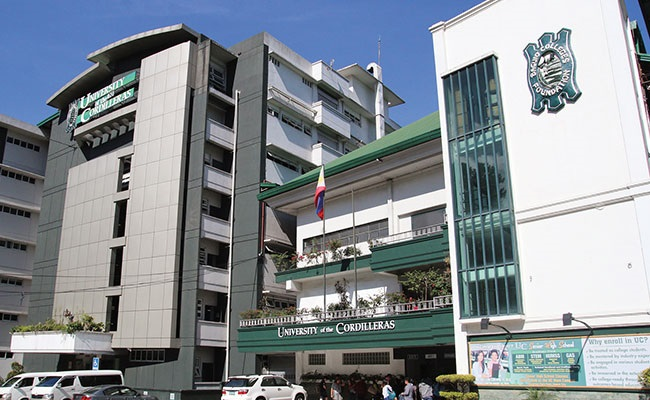

THE HISTORY OF THE UNIVERSITY OF THE CORDILLERAS
Baguio Colleges, as the University of the Cordilleras was earlier known, pioneered in tertiary education in the mountain highlands of the Cordillera region amidst devastation in and around Baguio City after the Second World War.
Despite a pessimistic outlook and the bleak prospects pervading the climate of any undertaking at that time, Atty. Benjamin R. Salvosa envisioned Baguio City as a university town. With such vision, he undauntedly pursued a noble mission by founding a college.
Through the years, the University of the Cordilleras has grown bigger through the offering of additional courses and increasing student enrollment. It continues to grow even better with time, as evidenced by exemplary performance in various fields of discipline, with its graduates shining in national licensure examinations, and its alumni doing well in private employment, in the practice of their trade and profession, and in public service.
Today, the University of the Cordilleras caters to more than 18,000 students coming from the Cordillera Administrative Region (CAR), Regions I and II, neighboring provinces of Luzon. In addition, UC has the largest population of international students among HEIs in Baguio City represented by 37 nationalities. Programs offered now range from basic education to graduate studies, law, arts and sciences, business and accountancy, nursing, teacher education, information technology and computer science, hospitality and tourism, and criminal justice.
UC has received recognitions which are testaments to its delivery of quality educational services. In 2019, UC's was hailed ISO 9001:2015 Certified. The Commission on Higher Education has granted UC the Autonomous University Status. The commission has likewise identified three (3) Centers of Excellence in UC namely Information Technology, Criminology, and Teacher Education. The University's College of Law is rated among the top law schools in the country, notably having graduated two (2) Bar Examination First Placers. Additionally, over 20 programs have been accredited by private accrediting bodies.